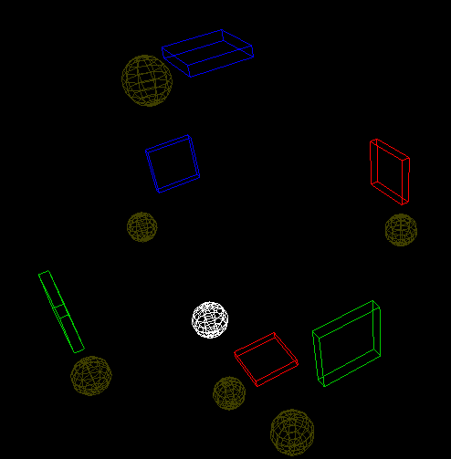

Why do we still fondly reminisce the days of retro gaming? Perhaps it is the simplicity, the quintissential zen of games like Pac Man, Pong, or Breakout, that create their appeal, back in the day before the development of complexities like storyline, game mechanics, and rankings. ÜberPong tries to integrate newer developments in gameplay technology, like 3d graphics and motion control, into an action-packed (or not) remix of a classic game.
ÜberPong (originally Six Way Pong) is a project I developed for the November Hackers@Berkeley Hackathon. Originally, it was intended as my first experiment with the THREE.js javascript 3-d graphics library. Under the oiginal design, it was going to be a three player online game. However, the opportunity arose to work with the Leap Motion API, particularly, the new JavaScript library, so what started as an experiment in 3-d graphics turned into a rudimentary motion game.
Access the project here.